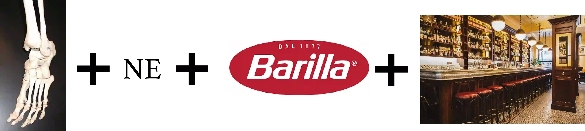

Camilla
DEL 4
Samvetet
Kära läsare.
Dags att röra sig mot SVT.

Trots sina tveksamheter och rädslan för vad som skulle kunna hända, bestämde sig Mia för att ge lappen till Camilla. Hon kunde helt enkelt inte stå ut med tyngden av sitt samvete. Tanken på att något skulle ske bakom Camillas rygg, utan att hon haft en chans att försvara sig, gnagde i bröstet. Det var inte rätt. Och Mia visste att hon behövde göra det rätta, även om det kunde kosta mycket.
Men för att kunna lämna Jonathan utan att väcka misstankar, var hon tvungen att ljuga. Med en puls som dunkade i tinningarna sa hon, med så stadig röst hon kunde, att Camilla tidigare under dagen hade nämnt att hon verkligen behövde Mia till sin intervju på SVT - att det var viktigt. En slags nödlögn, tänkte Mia, något som bara behövde hålla i några timmar.
Jonathan såg trött ut, uppgiven nästan. Han suckade djupt och såg bort, som om han inte orkade med fler konfrontationer. "Okej", sa han till slut. "Jag tar mötet själv."
Det var en lättnad, men ingen seger. Mias skuld kändes ännu tyngre nu. Hon tackade honom snabbt och gick, med dåligt samvete.
När Mia kom fram till SVT var det som om verkligheten slog henne i ansiktet. Byggnaden reste sig framför henne som en kall, grå jätte. Varje steg mot entrén kändes tyngre och tyngre. Hennes händer skakade okontrollerat, svetten låg som ett tunt lager på handflatorna. Hon försökte dölja det genom att trycka dem hårt mot sidorna av jackfickorna. Andningen var ytlig, som om bröstkorgen inte riktigt ville släppa in luften.
Camilla får syn på Mia och förstår att det är något som inte stämmer. Hon såg genast på hennes kroppsspråk att något var fel, Camilla skyndade fram.
"Vad gör du här?" frågade Camilla, rösten låg men skarp av oro.
Mia lyfte blicken, hon svalde hårt innan hon svarade: "Jag har något jag måste visa dig." Med en darrande hand rotade hon i jackfickan och drog fram en skrynklig lapp, som hon sträckte mot Camilla.
Camilla tog emot den och vecklade långsamt ut lappen. Hon behövde bara kasta en snabb blick på den handskrivna hälsningen och det lilla hjärtat för att förstå.
Mia såg hur en blandning av sorg, ilska och något annat som en sorts trötthet fladdrade över Camillas ansikte. Hon ville säga något, kanske be om ursäkt för att hon visade henne det, men orden fastnade.
"Kom. Vi kan inte vara kvar här." Utan att vänta på svar styrde hon stegen mot utgången. Camilla gick snabbt, som om hon redan hade en bestämd plats i åtanke, en plats hon visste att Jonathan inte skulle vara på.
"Var ska vi?", frågade Mia.

En ny plats väntar… men först måste du knäcka koden. Titta noga på rebusen, den avslöjar vägen vidare.
